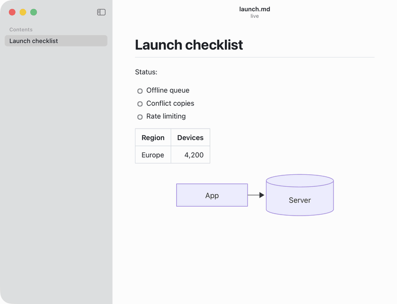
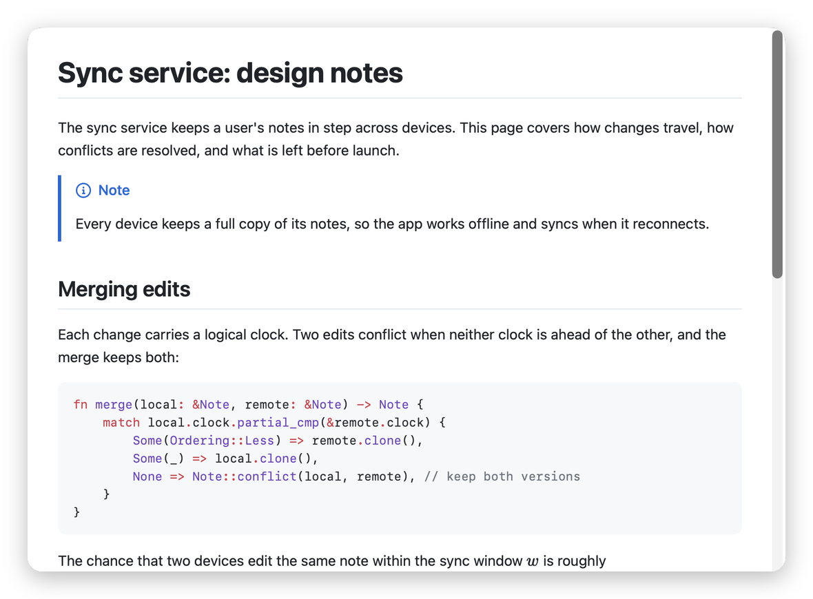

Read what your coding agent writes
A fast, native Markdown viewer for macOS. Live reload, one-key AI summaries, Quick Look previews, diagrams and math. Free and open source.
Apple silicon and Intel · macOS 13 or later · 6 MB · signed and notarized by Apple

Everything a long Markdown file needs
Opens straight to the rendered page, keeps up with every save, and tells you what's in it before you read it all.
One-key TL;DR
⇧⌘S summarizes the document as a list or a Mermaid diagram, with links to the sections each point comes from.
Your model, your key
OpenRouter, OpenAI, Anthropic, Gemini, Grok, Mistral, DeepSeek or Groq, or fully local with Ollama and LM Studio.
Live reload
Every save shows up right away, and you keep your place in the document.
Quick Look
Press space on a .md file in Finder for a rendered preview, diagrams and math included.
Renders what GitHub renders
Tables, task lists, alerts, footnotes, front matter, 200+ languages, Mermaid diagrams and KaTeX math.
Private and small
No account, no tracking. Keys stay in the macOS keychain, and documents are only sent when you ask. A 6 MB download.
Keeps up with every save
Leave it open next to your editor or your agent. Text, checkboxes, tables and diagrams update as the file changes, without losing your place.

Made for agent workflows
Claude Code, Cursor and Codex write long plans and reports. Add one line to your
AGENTS.md or CLAUDE.md and your agent opens them in MDViewer for review:
When you write or update a plan, report or other long Markdown document,
open it for review with `open -a MDViewer <file>`.Long documents are read in parts and summarized from notes, so even a small local model can summarize a 2 MB log.

Previews right in Finder
Select a Markdown file and press space: code, math and Mermaid diagrams render in Quick Look, from the same engine as the app.
How it's built
MDViewer is built with Tauri 2 (Rust) and Svelte. Two write-ups on the tricky parts: